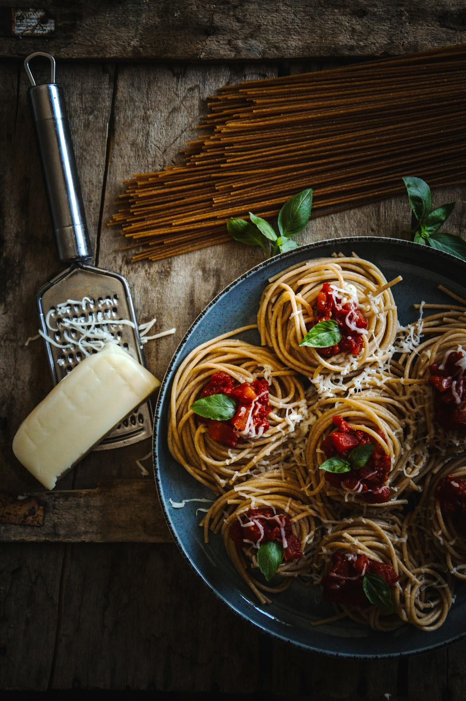
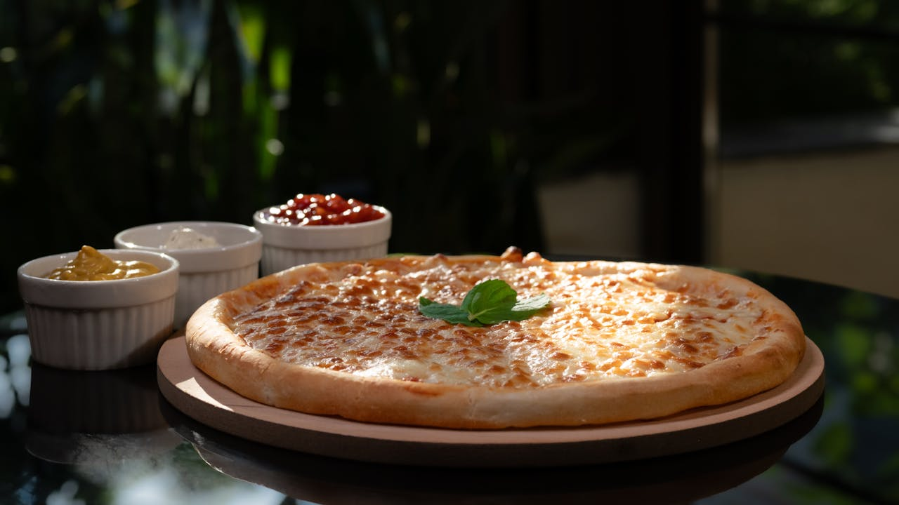
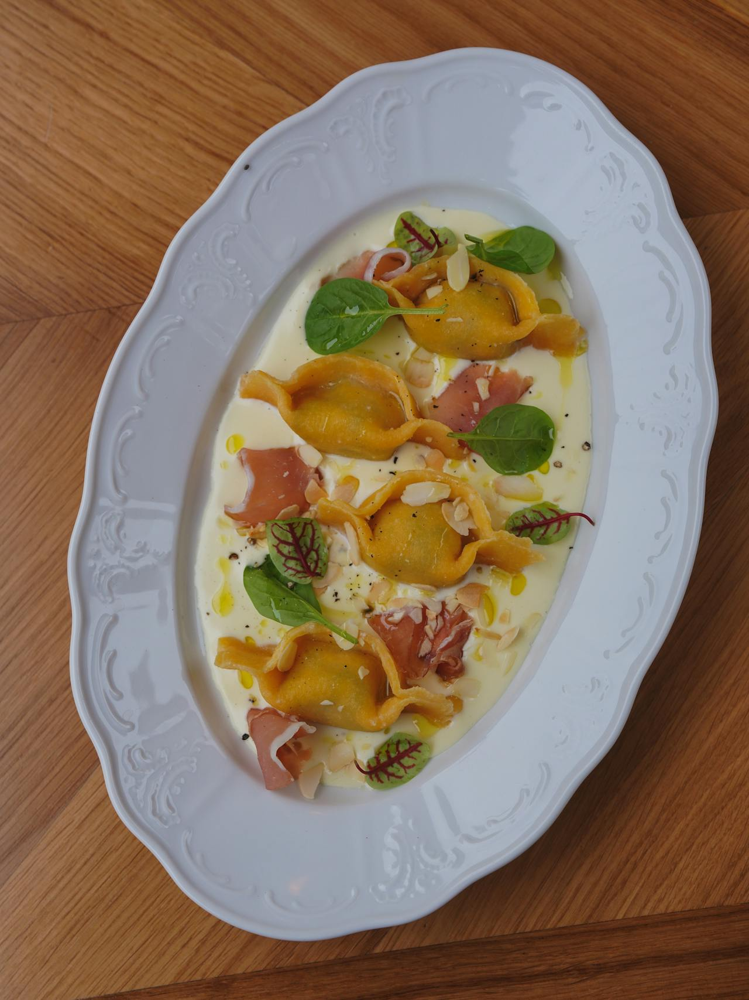
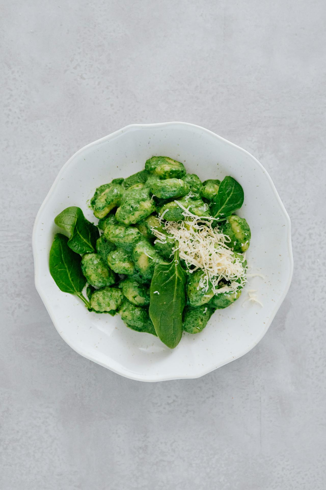
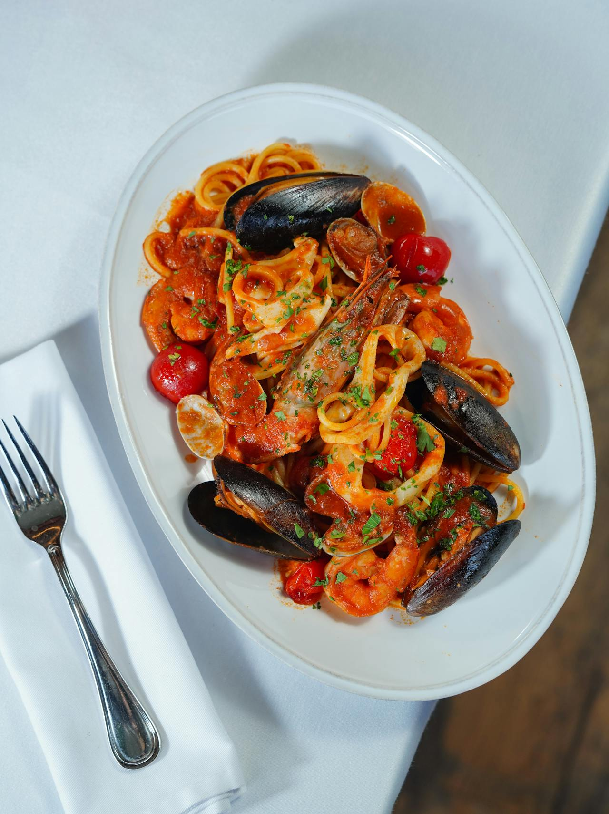

Macarrão com molho de beringela

Ingredientes do macarrão
- 500g de macarrão espaguete integral
Modo de preparo
Cozinhe o macarrão a 1800C até ficar ao dente, escorra o macarrão e reserve.
Ingredientes do molho
- 100g de alho moído
- 50g de cebola ralada
- 5mL de azeite
- 50g de molho de tomate light
- 150g de beringela cortadas em cubo e sem a pele
- 100g de parmesão light
- Folhas de mangericão para enfeitar
Modo de preparo do molho
Em uma panela esquente o azeite, frite o alho e a cebola em seguida acrescente a beringela e refogue ate ela diminuir de volume, acrescente o molho de tomate e mexa por 15 minutos, corte o fogo.
Em uma travessa coloque os macarrões em formato de ninho, coloque o molho por cima e uma folha de mangericão para enfeitar e coloque um pouco de parmesão sobre o macarão e sirva.
Pizza de Queijo light

Ingredientes da massa
- 3 ovos
- 500g de farinha integral
- 100mL de leite
- 50g de farinha biológica
- 5g de sal
Modo de preparo da massa
Em uma panela esquente o leite até 600C depois acrescente o fermento biológio e deixe ele espumar. Em uma outra tigela maior coloque a farinha, os ovos, o sla e por ultimo acrescente o leite com o fermento, misture até obter uma massa homogênia e deixe descansar por 45 minutos.
Divida a massa em 4 partes iguais e coloque cada parte em uma forma redonda, abra a massa e faça pequenos furos com o garfo na massa e leve ao forno pré aquecido a 1800C, asse por 5 minutos e retire.
Ingredientes do molho 1
- 200g de maionese light
- 5 gotas de limão
Modo de preparo do molho 1
Misture os ingredientes e coloque em um potinho de molho.
Ingredientes do molho 2
- 200g de catchup light
- 100g de maionese light
Modo de preparo do molho 2
Misture a maionese eo catchup e coloque em um potinho de molho.
Ingredientes do molho 3
- 200g de queijo light
- 100g de parmesão ralado light
- 200g de maionese light
- 10 gotas de limão
Modo de preparo do molho 1
Misture a maionese primeiro com o limão depois acrescente o parmesão e o outro queijo depois coloque em um potinho de molho.
Ingredientes do recheio
- 200g de queijo light
- 100g de parmesão ralado light
- Folhas de mangericão para enfeitar
Modo de preparo do recheio
Misture os dois queijos e coloque sobre a massa da pizza pré assada, coloque um pouco mais de parmezão sobre o recheio e leve ao forno à 2500C por 5 minutos. Depois de assado coloque algumas folhas de mangericão para enfeitar e sirva com os molhos de sua preferência.
Agnolotti ao molho branco

Ingredientes do Agnolotti
- 500g de agnolotti integral
Modo de preparo
Cozinhe o agnolotti a 1800C até ficar ao dente, escorra o e reserve.
Ingredientes do molho
- 100g de alho moído
- 50g de cebola ralada
- 150g de creme de leite light
- 100g de queijo light
- 150g de de bacon defumado fatiado bem fininho
- 5g de pimenta do reino moído
- Folhas de mangericão para enfeitar
- 5mL de azeite
Modo de preparo do molho
Em uma panela esquente o azeite, frite o alho e a cebola em seguida acrescente o queijo, o creme de leite e mexar ate formar um caldo grosso. Corte o fogo e coloque o molho dentro de uma travasse oval, depois coloque os agnolotti juntamente com as fatias de bacon, as folhas de mangericão e a pimenta do reio e sirva.
Nhoque ao molho pesto

Ingredientes da massa de Nhoque
- 1,2kg de batata inglesa
- 240g de farinha de trigo integral
- 100g de manteiga sem sal
- 6g de noz-moscada
- 20g de queijo parmesão light
- 6g de pimenta do reino moída
- Sal a gosto
Modo de preparo da massa
Cozinhe as batatas a 1800C, depois passae-a na peneira. Tempre com sal, pimenta, noz-mocada e a manteiga.
Espere esfriar e acrecente a farinha e mexa até obter uma massa homogênia e depois molde elas no formato de nhoque.
Em uma panela coloque augua para aquecer à 1800C, coloque os nhoques e assim que eles subirem retire-as com uma espatula e coloqueos na travessa de sua preferência.
Ingredientes do molho pesto
- 200mL de azeite extravirgem
- 200g de folha de mangericão
- 150g de nozes sem casca
- 150g de queijo pecorino
- 150g de ricota
- Sal a gosto
Modo de preparo do molho pesto
Em um liquidificador, bata o mangericão, o azeite, as nozes e o sal, bata até virar uma pasta consistente. Dpois misture os queios em uma segunda tigela e acrescente a mistura do liquidificador, coloque o molho sobre o nhoque e algumas folhas de mangericão e sirva.
Macarrão ao molho de frutos do mar

Ingredientes do macarrão
- 500g de macarrão espaguete integral
Modo de preparo
Cozinhe o macarrão a 1800C até ficar ao dente, escorra o macarrão e reserve.
Ingredientes do molho
- 100g de alho moído
- 50g de cebola ralada
- 5mL de azeite
- 100g de lula pré cozido
- 100g de camarão pré cozido
- 100g de mexilhão pré cozido com a concha
- 150g de molho de tomate light
- 5 mini tomates cortados so meio
- Cebolinha para enfeitar
Modo de preparo do molho
Em uma panela esquente o azeite, frite o alho e a cebola em seguida acrescente o molho de tomate e deixe cozihar por 15 minutos acrescente o camarão, a lula e os mexilhões, misture e retire do fogo. Coloque o molho sobre o macarrão e disponha as conhas do mexilhões para enfeitar o prato e salpique com um pouco de cebolinha cortados bem fino e sirva.